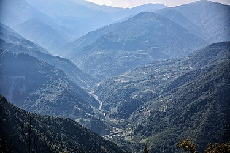

get to know georgia
მაჭახელას ეროვნული პარკი — ეროვნული პარკი აჭარაში, მდინარე მაჭახელისწყლის ხეობაში. ფართობი 7333,18 ჰა.[1]
დაარსდა 2012 წელს, უნიკალური ბიოლოგიური და ლანდშაფტური ბიომრავალფეროვნების შენარჩუნების, კოლხური ტყეების ეკოსისტემის გრძელვადიანი დაცვის, ეკოლოგიური უსაფრთხოებისა და ბუნებრივ გარემოში ტურისტული და რეკრეაციული საქმიანობის განვითარების უზრუნველყოფის მიზნით. მაჭახელას ეროვნული პარკი ხელვაჩაურის მუნიციპალიტეტში მდებარეობს. იგი ბათუმიდან 30 კმ-ითაა დაშორებული.
პარკის ტერიტორიის 95% ტყით და გაუვალი ბუჩქნარითაა დაფარული, აქ ხარობს ისეთი რელიქტური და იშვიათი სახეობები, როგორიცაა კოლხური ბზა, წაბლი, კოლხური თხილი, ქართული კაკალი, უნგერნისა და სმირნოვის შქერი, უთხოვარი, თელა და სხვ. პარკში ფუნქციონირებს ორი, სამანქანოსთან ინტეგრირებული საფეხმავლო ბილიკი. მაჭახელას ეროვნულ პარკში აქტიური ტურისტული სეზონი გრძელდება მაისიდან-ოქტომბრამდე[2]